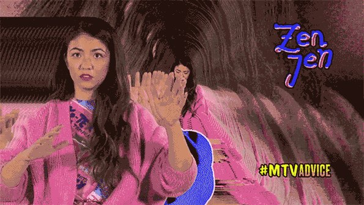
CRVI000853Richard Turley - [MTV ident — Zen Jen]
MTV ident · animated
MTV ident · animated

CRVI000253Lex Drewinski - Investigation Proved
Film Poster Designed By Lex Drewinski · 1983 · 1983
Film Poster Designed By Lex Drewinski · 1983 · 1983
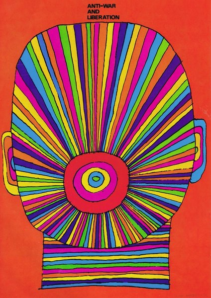
CRVI001048 - ANTI-WAR AND LIBERATION
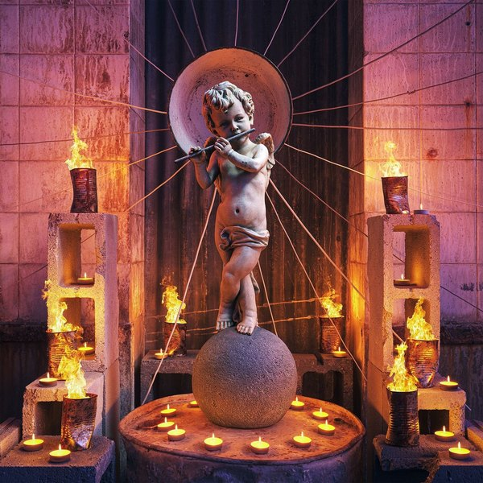
CRVI001092Kim Laughton - Untitled
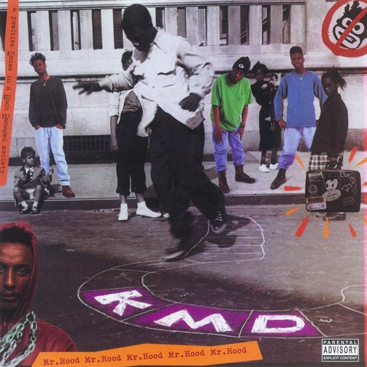
CRVI000419KMD - Mr. Hood
Designer unknown · Elektra · 1991
Designer unknown · Elektra · 1991

CRVI000071David Kanaga - Dyad OGST
Designer unknown · Software · 2013
Designer unknown · Software · 2013

CRVI000123Shigeo Fukuda - Jazz Festival Montreux
19e Festival de Jazz Montreux, 5–20 juillet 1985 · 100 x 70 cm · 1985
19e Festival de Jazz Montreux, 5–20 juillet 1985 · 100 x 70 cm · 1985
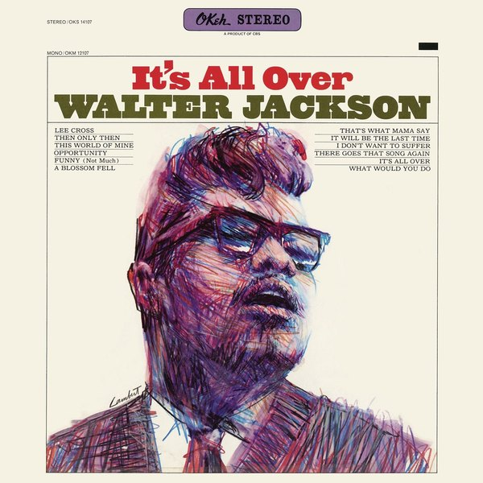
CRVI000343Walter Jackson - It's All Over
Designer unknown · Okeh · 1965
Designer unknown · Okeh · 1965

CRVI000370The Neville Brothers - Neville - Ization
Designer unknown · Black Top · 1984
Designer unknown · Black Top · 1984
CRVI000473Unknown - Pikettymania
Bloomberg Businessweek, June 2 – June 8, 2014 · 2014
Bloomberg Businessweek, June 2 – June 8, 2014 · 2014
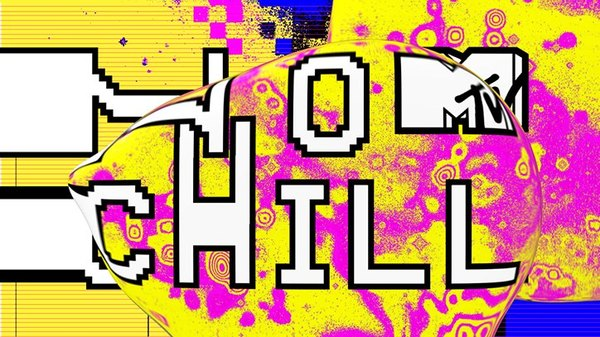
CRVI000852Richard Turley - No Chill
MTV
MTV

CRVI000459Alan Aldridge - Hamlet, Revenge!
Cover for Michael Innes · Penguin Crime
Cover for Michael Innes · Penguin Crime
CRVI000015FKA Twigs - LP 1
Designed by FKA Twigs, Phil Lee · Young Turks · 2014
Designed by FKA Twigs, Phil Lee · Young Turks · 2014
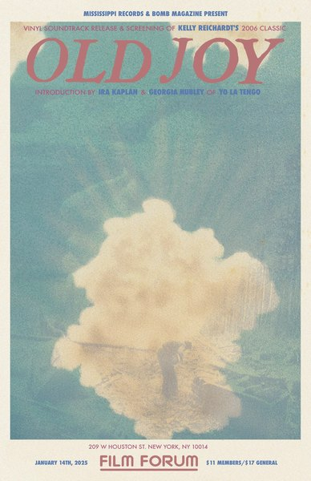
CRVI000748Olaf Stapledon - Sirius
Designed by David Pelham · Penguin Science Fiction · 1972
Designed by David Pelham · Penguin Science Fiction · 1972
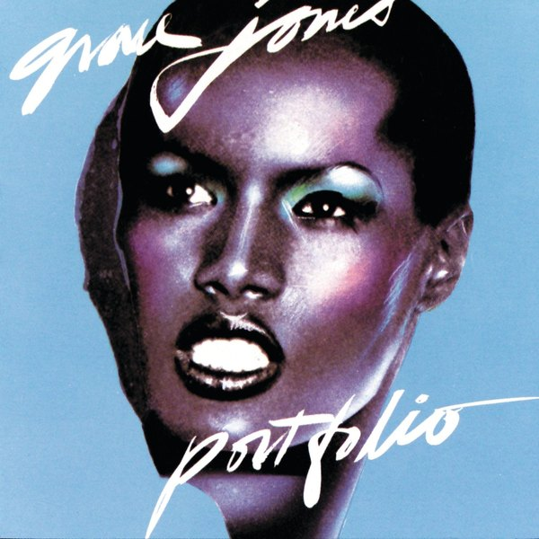
CRVI000394Grace Jones - Portfolio
Designer unknown · Island Records · 1977
Designer unknown · Island Records · 1977
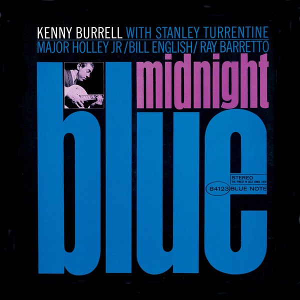
CRVI001160Kenny Burrell - Midnight Blue
Designed by Reid Miles, photograph by Francis Wolff · Blue Note BLP 4123 · 1963
Designed by Reid Miles, photograph by Francis Wolff · Blue Note BLP 4123 · 1963
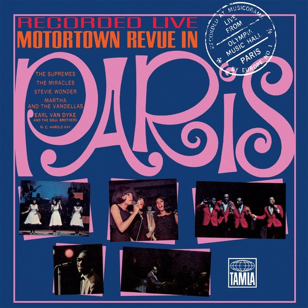
CRVI000337Various Artists - Recorded Live Motortown Revue In Paris
Designer unknown · Universal · 2016
Designer unknown · Universal · 2016
CRVI000478Tim O'Brien - American Oligarchy
Mother Jones, January + February 2024 · 2024
Mother Jones, January + February 2024 · 2024
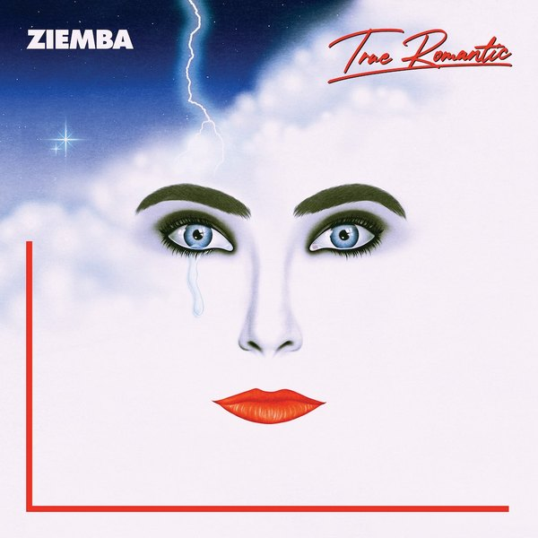
CRVI000721Ziemba - True Romantic
Designed by Robert Beatty · Sister Polygon Records · 2020
Designed by Robert Beatty · Sister Polygon Records · 2020
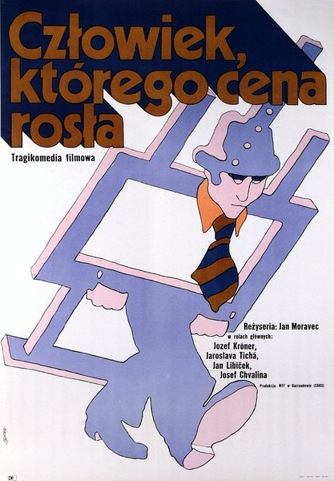
CRVI000258Maciej Zbikowski - The Man Whose Price Rose
Film Poster Designed By Maciej Zbikowski · 1973 · 1973
Film Poster Designed By Maciej Zbikowski · 1973 · 1973
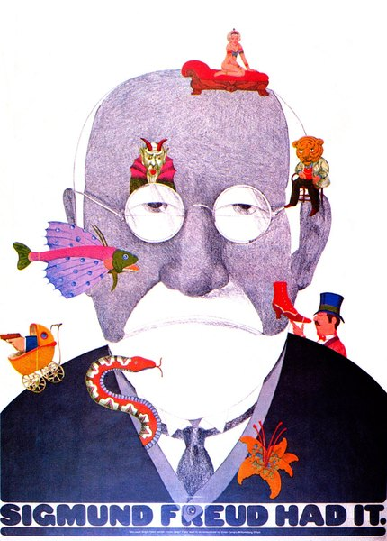
CRVI000829Seymour Chwast - Freud
Union Camp Paper · 64 × 89 cm
Union Camp Paper · 64 × 89 cm
CRVI001074Kim Laughton - Untitled
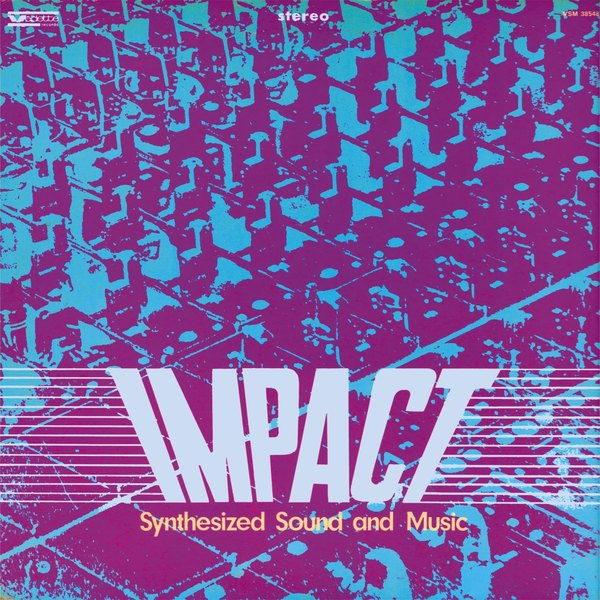
CRVI000075H. Tical - Impact Synthesized Sound And Music
Designer unknown · Vedette Records · 1971
Designer unknown · Vedette Records · 1971
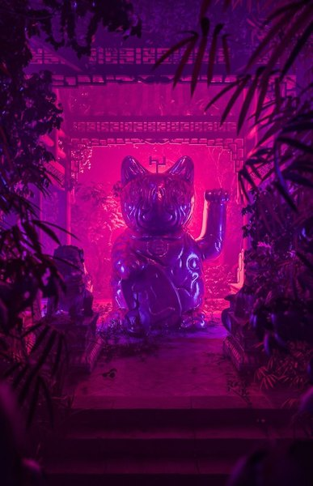
CRVI001076Kim Laughton - Untitled
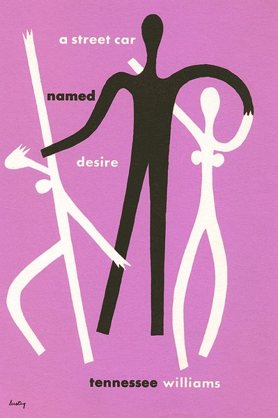
CRVI000579Alvin Lustig - A Streetcar Named Desire
Tennessee Williams · New Directions · 1947
Tennessee Williams · New Directions · 1947

CRVI000860Julian Stanczak - Connecting
145 × 145 cm · 1967
145 × 145 cm · 1967
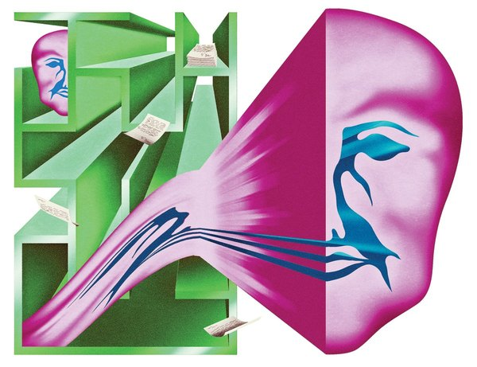
CRVI000741Robert Beatty - Untitled
Album cover · artist and title unrecorded · Trendland plate 12
Album cover · artist and title unrecorded · Trendland plate 12

CRVI000356The Bar-Kays - Money Talks
Designer unknown · Stax · 1978
Designer unknown · Stax · 1978
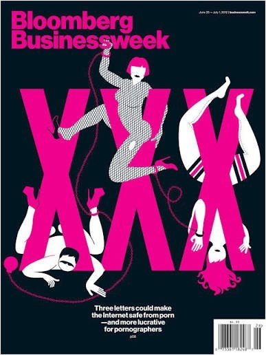
CRVI000466Unknown - XXX
Bloomberg Businessweek, June 25 – July 1, 2012 · 2012
Bloomberg Businessweek, June 25 – July 1, 2012 · 2012
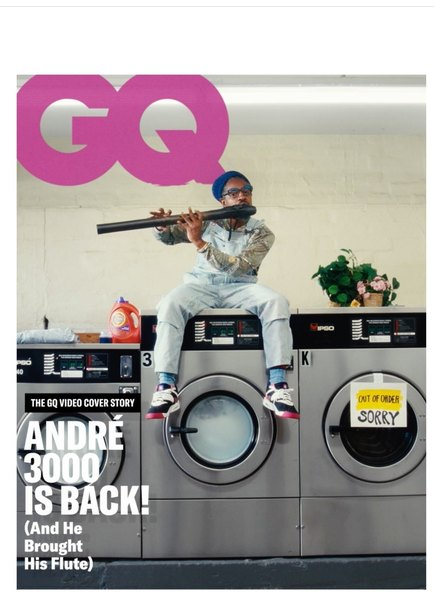
CRVI000529Robert Vargas - André 3000 Is Back!
GQ, November 2023 · 2023
GQ, November 2023 · 2023

CRVI000119Tadanori Yokoo - Koshimaki-Osen
腰巻お仙 · theatre poster for Kara Juro's Jokyo Gekijo (Situation Theatre) · silkscreen · 1966
腰巻お仙 · theatre poster for Kara Juro's Jokyo Gekijo (Situation Theatre) · silkscreen · 1966

CRVI000470Unknown - Miracle Worker
Bloomberg Businessweek
Bloomberg Businessweek
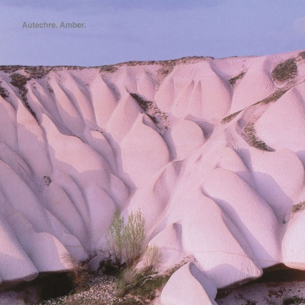
CRVI000054Autechre - Amber
Designed by The Designers Republic · Warp Records · 1994
Designed by The Designers Republic · Warp Records · 1994
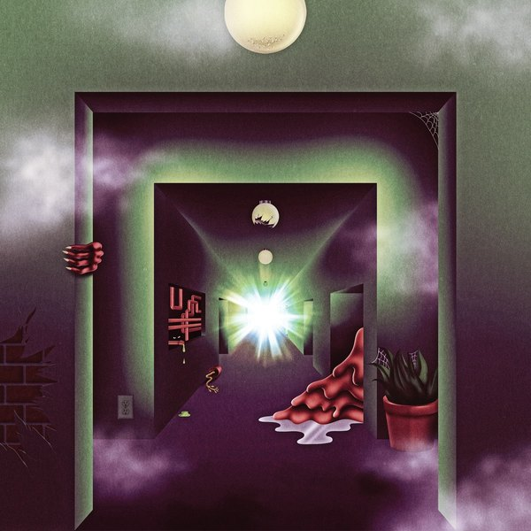
CRVI000722Oh Sees - A Weird Exits
Designed by Robert Beatty · 2016
Designed by Robert Beatty · 2016
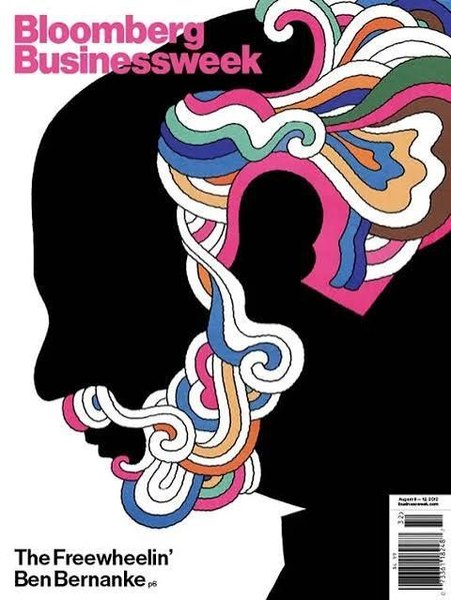
CRVI000462Richard Turley - The Freewheelin' Ben Bernanke
Bloomberg Businessweek, 6 August 2012 · illustration by David Parkins · 2012
Bloomberg Businessweek, 6 August 2012 · illustration by David Parkins · 2012

CRVI000622Tom Hislop, Stephen Meierding - The Sex Issue
Time Out New York, January 31-February 6 2018 · 2018
Time Out New York, January 31-February 6 2018 · 2018
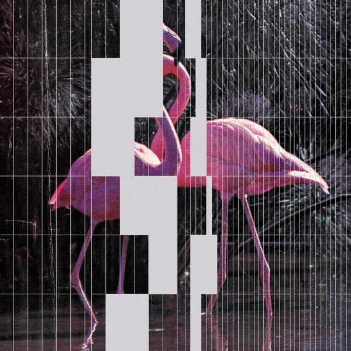
CRVI000326NHK'Koyxen - Dance Classics Vol.I
Designer unknown · Pan · 2012
Designer unknown · Pan · 2012
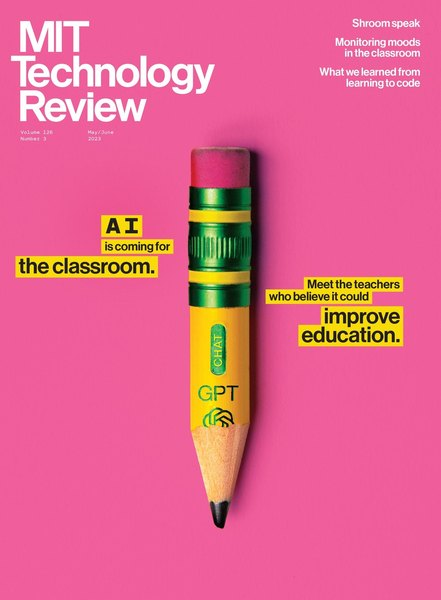
CRVI000519Unknown - Al Is Coming for the Classroom.
MIT Technology Review
MIT Technology Review

CRVI000158Kazumasa Nagai - Human Right - Living Together - Artis '89
Designed by Kazumasa Nagai · 1988
Designed by Kazumasa Nagai · 1988

CRVI000357The Meters - Rejuvenation
Designer unknown · Reprise · 1974
Designer unknown · Reprise · 1974
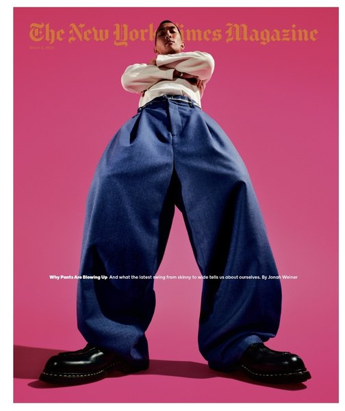
CRVI000483Bobby Doherty - Why Pants Are Blowing Up
The New York Times Magazine, March 3, 2024 · 2024
The New York Times Magazine, March 3, 2024 · 2024

CRVI000836Ottagono - Ottagono 72
marzo 1984 · anno 19 · 1984
marzo 1984 · anno 19 · 1984
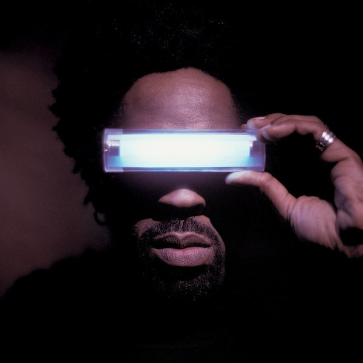
CRVI000401PAUL RANDOLPH - This Is What It Is
Designer unknown · Mahogani Music · 2004
Designer unknown · Mahogani Music · 2004
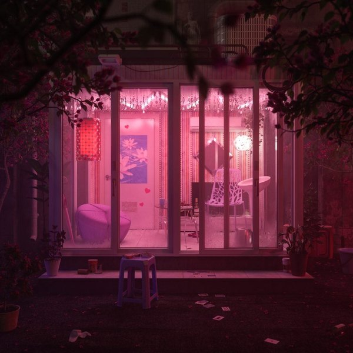
CRVI001077Kim Laughton - Untitled
Published by Real Life
Published by Real Life
CRVI000497Maili Holiman - TikTok's Evolution of Digital Blackface
WIRED, September 2020 · 2020
WIRED, September 2020 · 2020
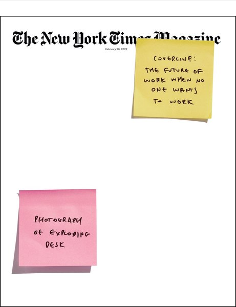
CRVI000556Gail Bichler - The Future of Work When No One Wants to Work
The New York Times Magazine, February 20, 2022 · 2022
The New York Times Magazine, February 20, 2022 · 2022
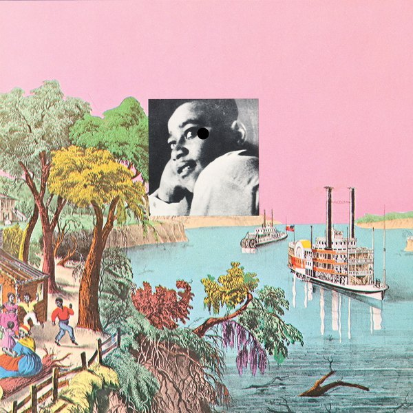
CRVI000818Seymour Chwast - The South, PPG #54
Push Pin Graphic #54 · 21.6 × 21.6 cm · 1969
Push Pin Graphic #54 · 21.6 × 21.6 cm · 1969

CRVI000291The Isley Brothers - Shout!
Designer unknown · RCA · 1959
Designer unknown · RCA · 1959
CRVI000703C.A. Wisely - Pi
Hand-painted Ghanaian film poster
Hand-painted Ghanaian film poster

CRVI000406Tin Man - Neo Neo Acid
Designer unknown · Absurd Recordings · 2012
Designer unknown · Absurd Recordings · 2012

CRVI000368Redd Hott - Redd Hott #1
Designer unknown · Venture · 1982
Designer unknown · Venture · 1982

CRVI000724Forma - Physicalist
Designed by Robert Beatty
Designed by Robert Beatty

CRVI000215Youngblood Brass Band - Pax Volumi
Illustration by Timothy J. Reynolds · Tru Thoughts · 2013
Illustration by Timothy J. Reynolds · Tru Thoughts · 2013

CRVI000340Wilson Pickett - The Exciting Wilson Pickett
Designer unknown · Atlantic · 1966
Designer unknown · Atlantic · 1966
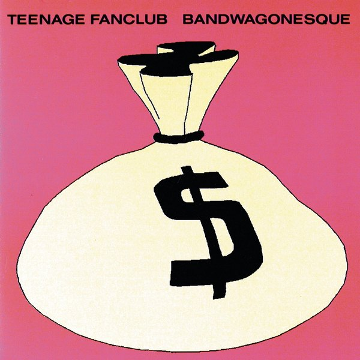
CRVI000430Teenage Fanclub - Bandwagonesque
Designer unknown · Creation · 1991
Designer unknown · Creation · 1991
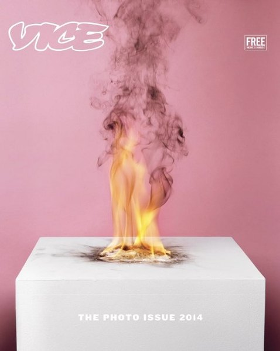
CRVI000655Unknown - The Photo Issue
VICE, July 2014 Brainiest · 2014
VICE, July 2014 Brainiest · 2014
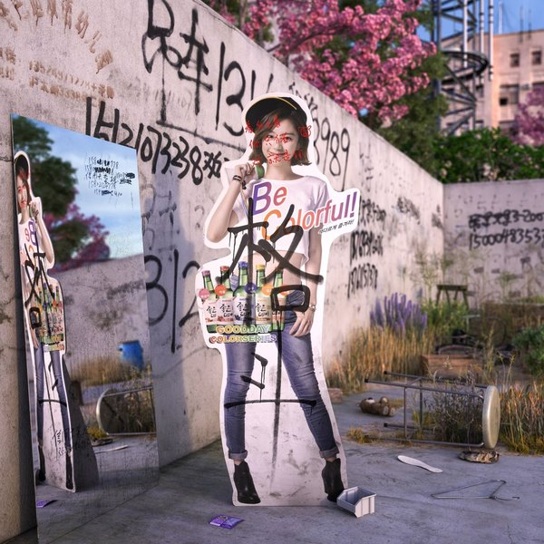
CRVI001087Kim Laughton - Untitled

CRVI000217Yayoi Kusama - Infinity Mirror Room — Phalli's Field (or Floor Show)
Kusama standing in the work · via David Zwirner · 1965
Kusama standing in the work · via David Zwirner · 1965
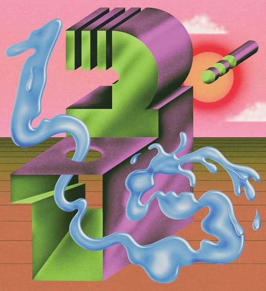
CRVI000739Robert Beatty - Untitled
Album cover · artist and title unrecorded · Trendland plate 10
Album cover · artist and title unrecorded · Trendland plate 10
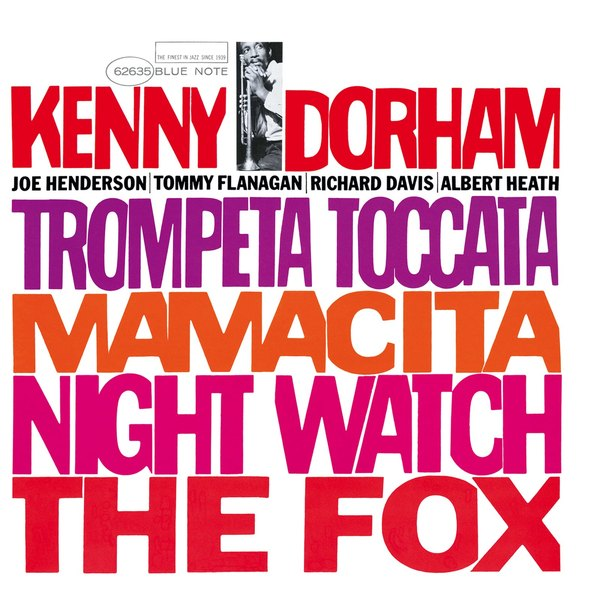
CRVI001161Kenny Dorham - Trompeta Toccata
Designed by Reid Miles, photograph by Francis Wolff · Blue Note BLP 4181 · 1965
Designed by Reid Miles, photograph by Francis Wolff · Blue Note BLP 4181 · 1965
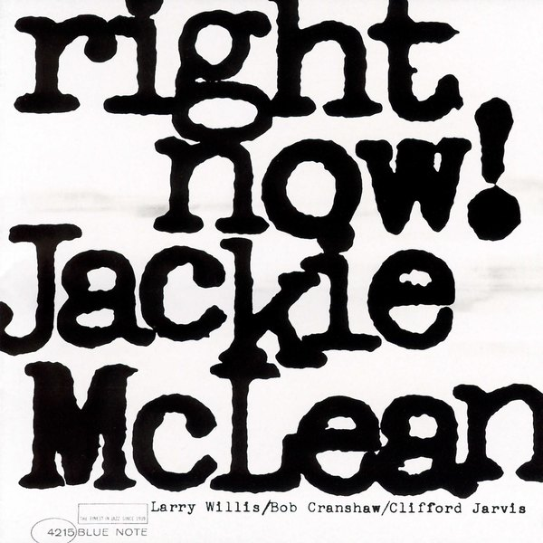
CRVI001146Jackie McLean - Right Now!
Designed by Reid Miles, photograph by Francis Wolff · Blue Note BST 84215 · 1966
Designed by Reid Miles, photograph by Francis Wolff · Blue Note BST 84215 · 1966